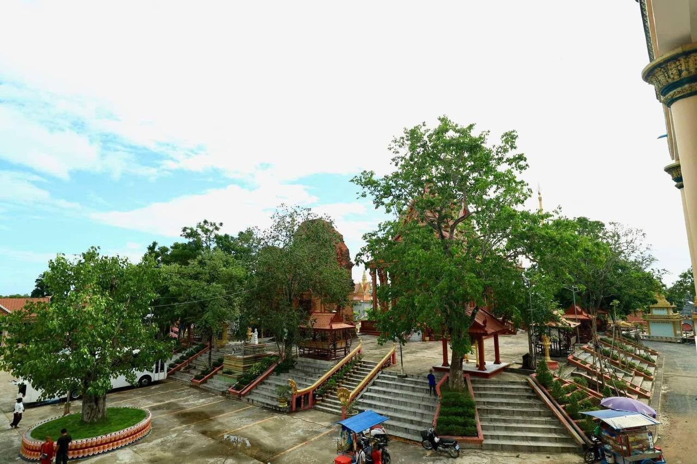
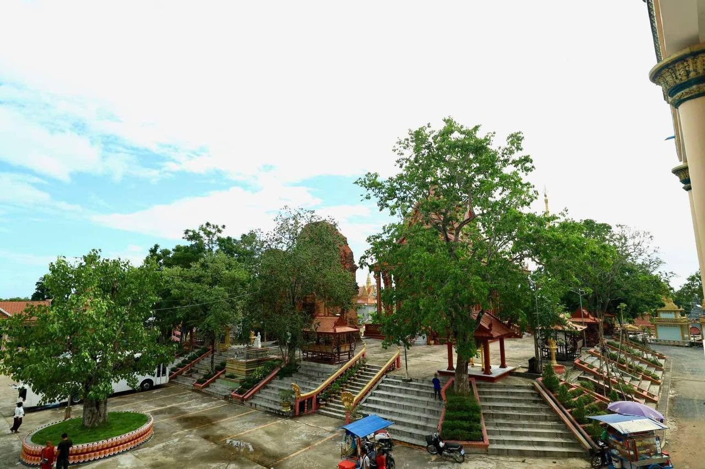
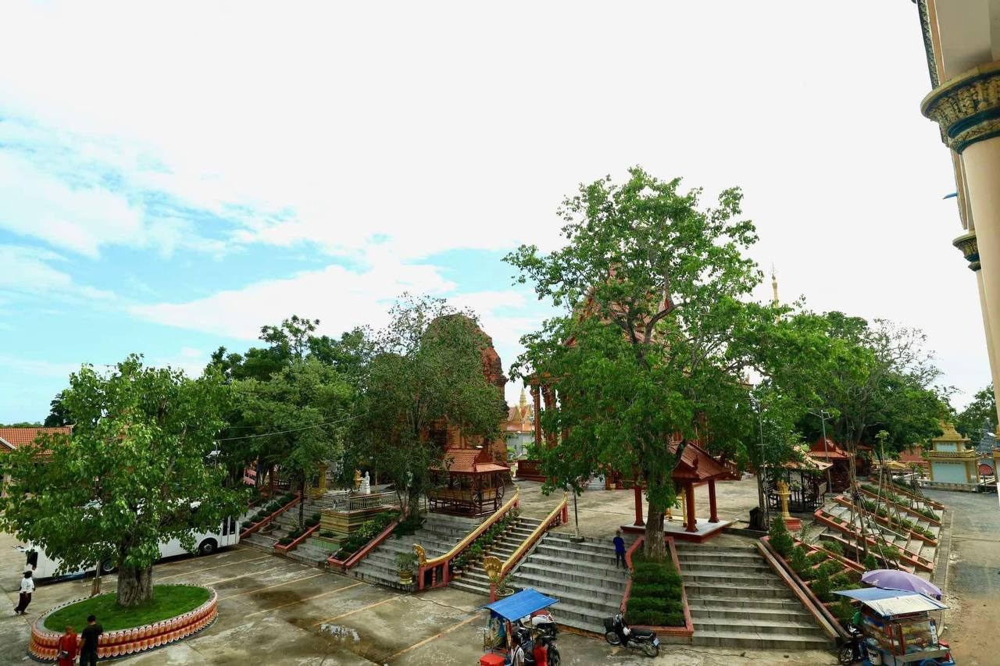

ប្រាសាទនាងខ្មៅ ជាប្រាសាទបុរាណសាងសង់ឡើងអំពីថ្មភក់ និងឥដ្ឋ ក្នុងរចនាបថកោះកែ សម័យអង្គរសតវត្សទី១០ក្នុងរាជព្រះបាទជ័យវរ្ម័នទី៤ នៃគ្រឹស្តសករាជ ដើម្បីឧទ្ទិសថ្វាយដល់ព្រះឥសូរក្នុងព្រហ្មញ្ញសាសនា ។ ប្រាសាទនេះ មានទីតាំងស្ថិតនៅឃុំរវៀង ស្រុកសំរោង ខេត្តតាកែវ ជាប់ផ្លូវជាតិលេខ២ ចម្ងាយប្រមាណ៥២គីឡូម៉ែត្រពីភាគខាងត្បូង រាជភ្នំពេញ ២៧គីឡូម៉ែត្រពីទីរួមខេត្តតាកែវ និង៣គីឡូម៉ែត្រ ពីភ្នំជីសូរ ។ ប្រាសាទនាងខ្មៅ មានទីតាំងស្ថិតនៅក្នុងបរិវេណវត្តប្រាសាទនាងខ្មៅ ដែលមានចម្ងាយ ៥០ គីឡូម៉ែត្រពីធានីភ្នំពេញ។
ប្រាសាទនេះ គឺជាបូជនីយដ្ឋានដ៏ស័ក្តសិទ្ធមួយ ដែលត្រូវបានប្រជាជន អ្នកស្រុកគោរពបូជារហូតដល់បច្ចុប្បន្ន។ ប្រាសាទនាងខ្មៅត្រូវសាង សង់អំពីថ្មភក់ និង ឥដ្ឋ តាមរចនាបទកោះកែ ជាស្នាព្រះហស្តរបស់ព្រះបាទជ័យវរ្ម័នទី ៤ ក្នុងសតវត្សរ៍ទី ១០ នៃគ្រិស្តសករាជ ( ៩២១ ដល់ ៩៤១ ) ឧទ្ទិសដល់ព្រហ្មញសាសនា ។ ប្រាសាទនេះមានប្រាង្គចំនួនបីសង់ទន្ទឹមគ្នា ។ ប្រាសាទនាងខ្មៅក៏ដូចជាប្រាសាទមួយចំនួនតូចឯទៀតដែរ ដែលត្រូវបានសាងសង់ឡើងដោយឥដ្ឋនាស.វទី១០ ។ បានជាហៅថាវត្ដប្រាសាទនាងខ្មៅ ព្រោះក្នុងវត្ដនោះមានប្រាសាទបុរាណពីរ ឈ្មោះប្រាសាទនាងខ្មៅ នៅខាងលិចវិហារ ចំខ្លោងទ្វារវត្ដទិសបស្ចឹម។ ប្រាសាទទាំងពីរនោះធ្វើពីថ្មផង ឥដ្ឋផង ទំហំ៤ម៉ែត្រ៤ជ្រុង កម្ពស់១០ម៉ែត្រ កំពូលស្រួចដូចចេតិយខ្ពស់ត្រដែត ។
